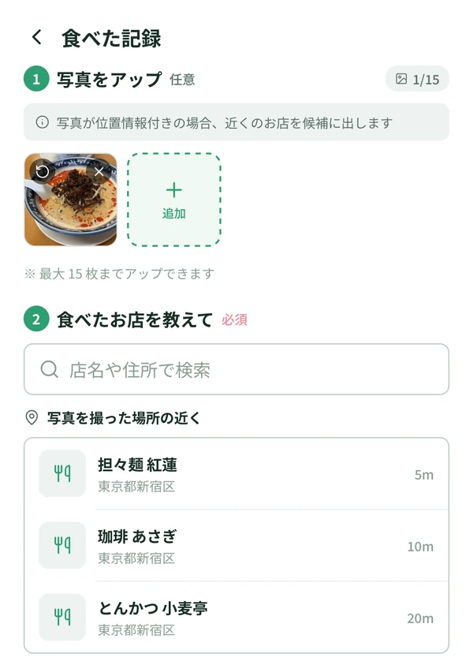
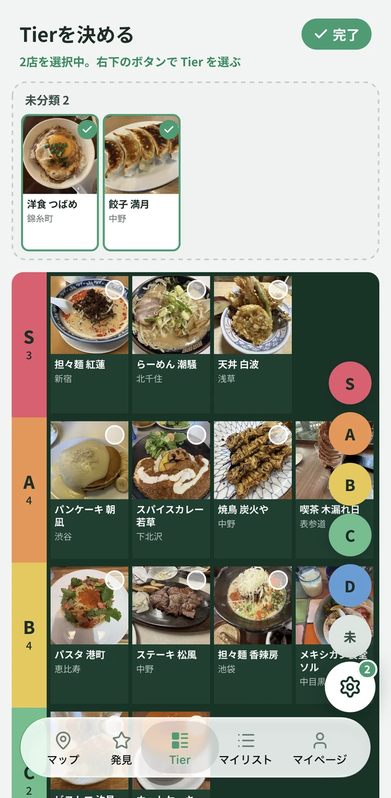
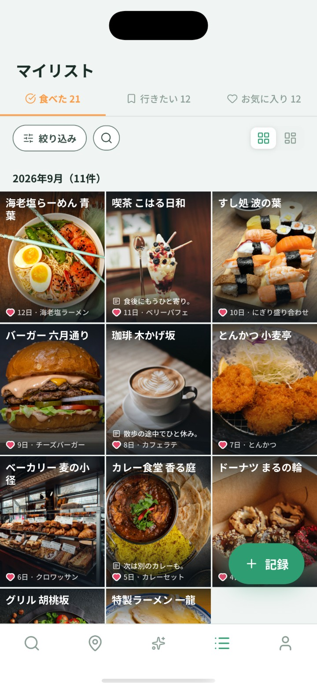

HOW IT WORKS
使い方は、3ステップ。
- STEP 1
食べたら、記録する。
写真を選ぶと、撮った場所からお店を候補に。お店を選んで、記録できます。

- STEP 2
見比べて、並べる。
「あの店と、同じくらい好き。」
食べたお店を選んで、S〜Dのボタンで置いていきます。
- STEP 3
あなたの好みを一枚に。
「どんなお店が好き？」と聞かれても、Tier表を1枚見せれば伝わる。S〜Aだけ、S〜Bまでなど、好きな範囲を画像にして保存・共有できます。
Tier表も、
食べた思い出も。
記録したお店が、写真の一覧にもたまっていく。
あの日の一皿も、すぐに見返せます。

よくある質問
Tier表とは何ですか？
自分の食べたお店を、S・A・B・C・Dの5つのTierに分けて並べた表です。どのお店をどこに置くかは、あなたの自由。同じTierに置けるお店の数に制限はありません。
全部のお店を分類する必要がありますか？
ありません。食べたお店は、まず未分類に入ります。好きなお店から少しずつ分類でき、迷うお店は未分類のまま残せます。
写真や口コミは必須ですか？
どちらも必須ではありません。写真がないお店もTier表に入れられます。写真を残すと、食べた料理と一緒に振り返れます。
無料で使えますか？ 対応エリアは？
無料でご利用いただけます。関東エリアの飲食店に対応しています。アプリをダウンロードして、アカウント登録後に使い始められます。